Eiheiji, Fukui: things to do, food and stays
Eiheiji · Fukui
Eiheiji
Highlighted on the Fukui map.
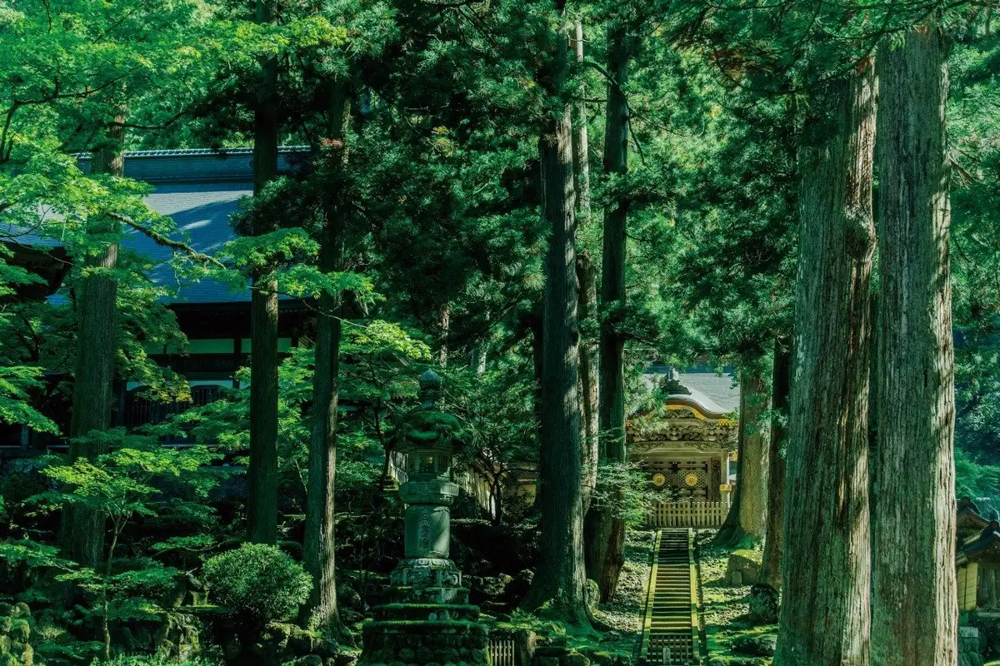
Stay
歓宿縁 ESHIKOTO
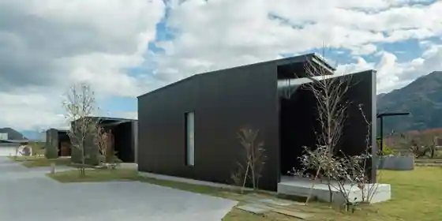
Kan Shukuen ESHIKOTO
Inn at Zenshitsu Onsen in Shitajobojidai, Eiheiji with open-air baths.
永平寺親禅の宿 柏樹關（藤田観光リゾート）
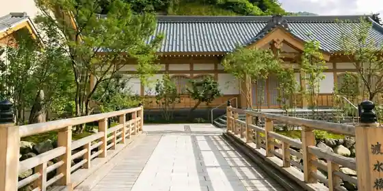
Eiheiji Oya Zen No Yado Hakuju Kan (Fujitakanko Resort)
一棟貸しのお宿 禅の里 笑来
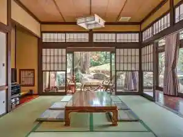
Hitomune Kashi No Yado Zen No Sato Warai Rai
囲宿 -KAKOMIYADO-
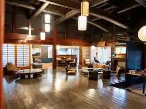
I Yado -KAKOMIYADO
Inn in Kyozen, Eiheiji with an irori hearth dining room and a renovated traditional house.
ドッグラン＆コテージ 結まーる
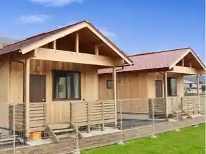
Dogguran & Cottage Ketsu Maru
Dining
けんぞう蕎麦
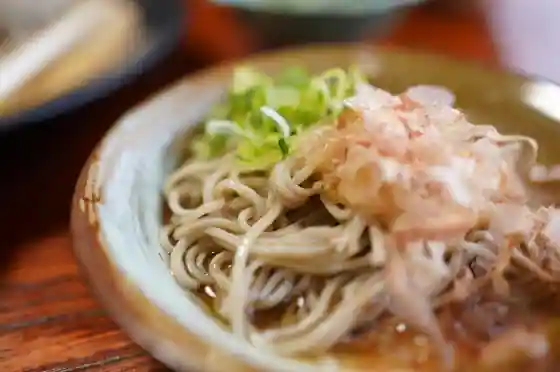
Kenzo Soba
日本料理 えん
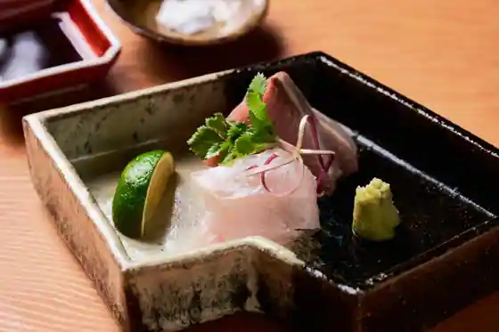
Nihonryori En
そば処 毘沙門
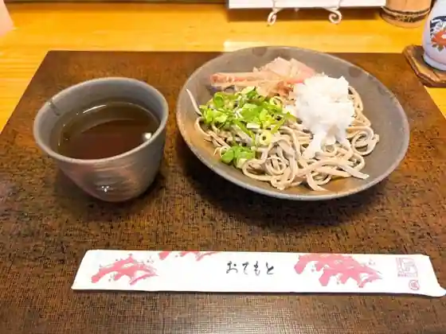
Soba Tokoro Bishamon
團助
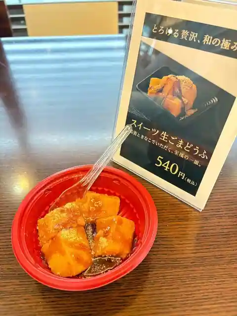
Dan Jo
アトリエ菓修
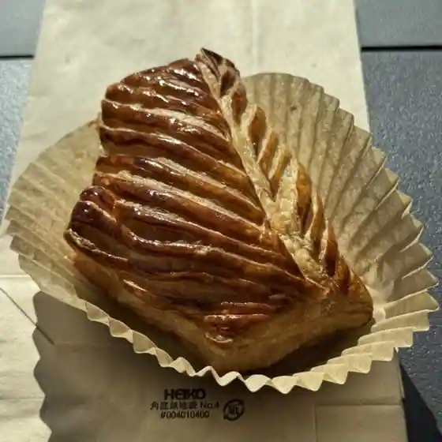
Atorie Ka Osamu
Ａpero&Patisserie acoya
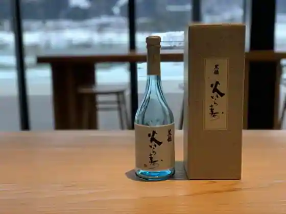
Apero&Patisserie acoya
マエダセイカ 羽二重餅の古里
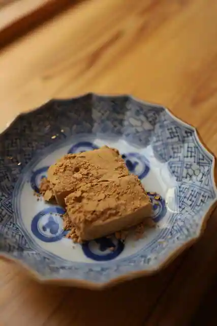
Maedaseika Habutae Mochi No Furusato
てらぐち
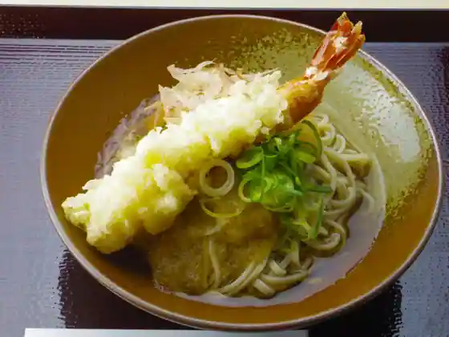
Teraguchi
永平寺そば亭 一休
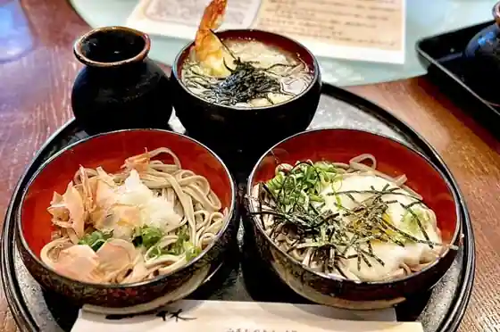
Eiheiji Soba Tei Ikkyu
永平寺 だるまぷりん
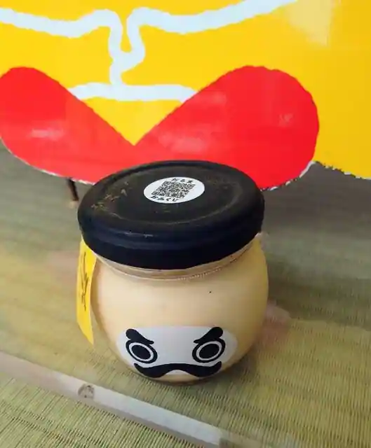
Eiheiji Ta Rumafu Rin
石田屋 ESHIKOTO店
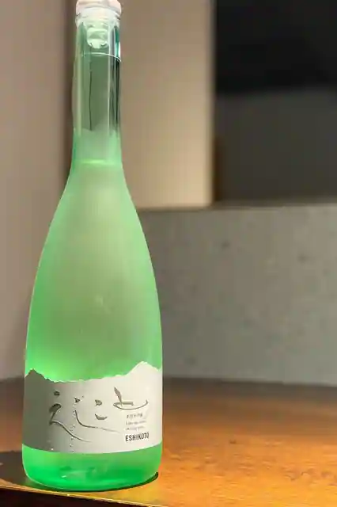
Ishida Ya ESHIKOTO
さぎり屋
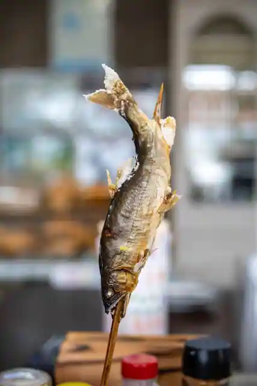
Sagiri Ya
古跡館 りうぜん
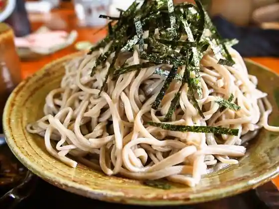
Koseki Kan Riuzen
HAREYA
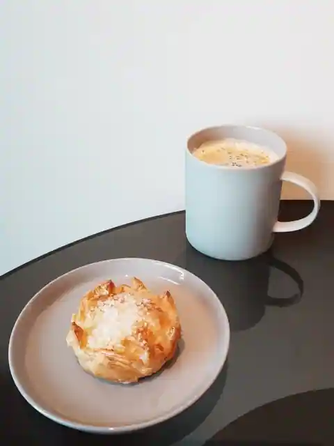
HAREYA
蕎麦 山や
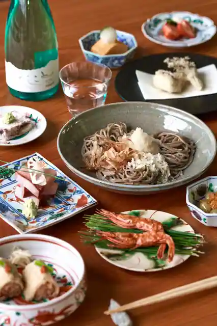
Soba Yama Ya
熟成かつ 天膳 本店
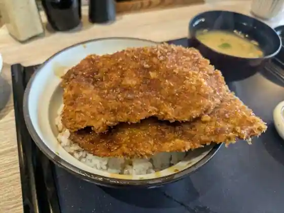
Jukusei Katsu Zen Hon
井の上
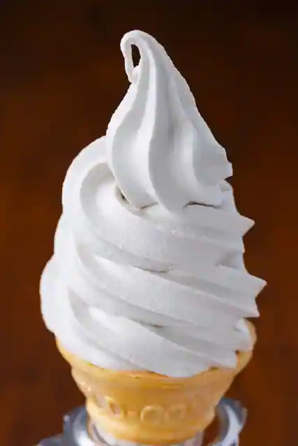
I No Ue
永平寺の館雲粋
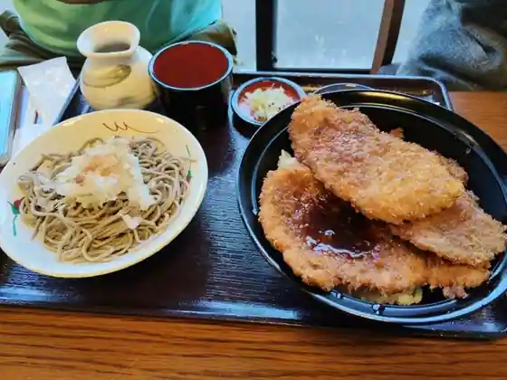
Eiheiji No Kan Kumo Sui
らーめん 福の神 松岡店
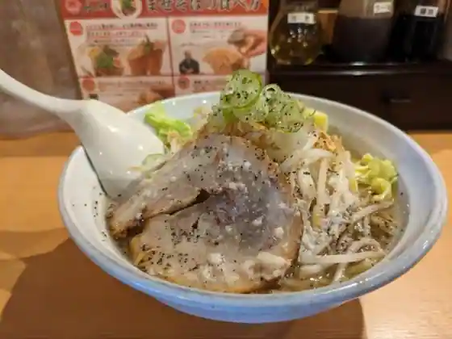
Ramen Fuku No Kami Matsuoka
幸家
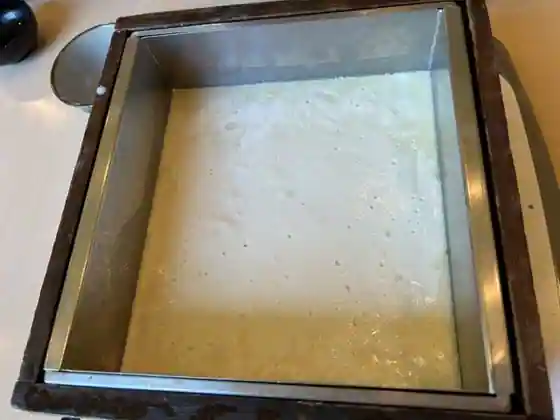
Sachi Ie
あぜ川
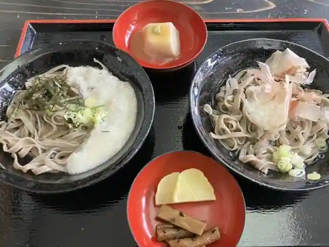
Aze Kawa
山楽亭
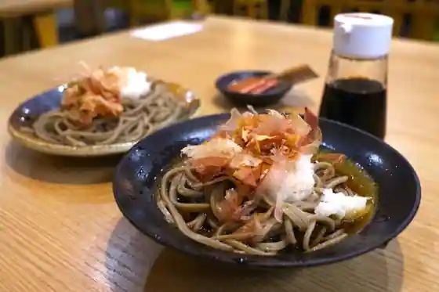
Sanraku Tei
矢の屋
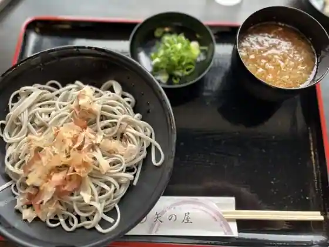
Ya No Ya
永平寺そば 極
Eiheiji Soba Kyoku
Sights
Omoto Yama Eiheiji
Benzaiten Hakuryu O Taiken Gen
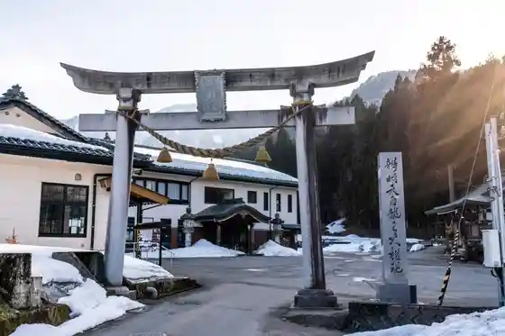
ESHIKOTO
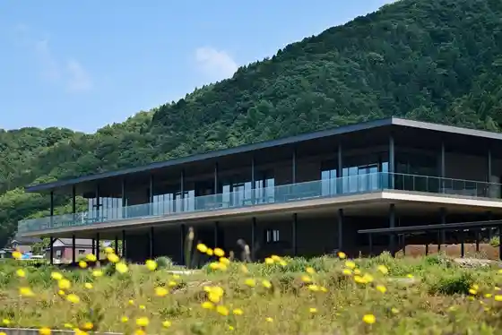
Roadside Station (Zen Village)
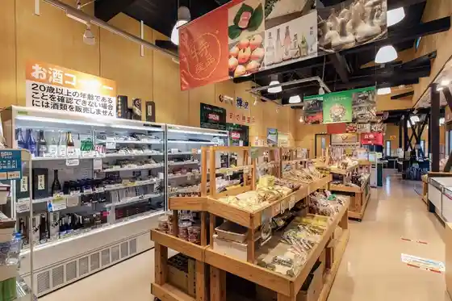
Habutae Mochi no Furusato Maedaseika
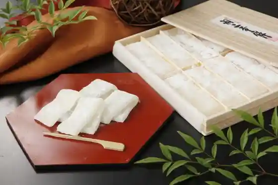
Eiheiji Oya Zen no Yado Hakuju Kan
Robai Yama Yoshimine Tera
Eiheiji Miryoku Hasshin Koryu Shisetsu Ei Bo Kan
Eiheiji Tourist Information
Echizen Tetsudo Eiheiji Kuchi Eki
Eiheiji Onsen Zen Village
Nama Habutae Mochi Mujin Chokubai Tokoro
Eiheiji Midori no Village Fureai Center
Jakko En
Rentasaikuru - Eiheiji - Echizen Tetsudo Eiheiji Kuchi Eki
Hokkyo So
Shihi Senkoku Magai Hotoke
Kuzuryu Kawa Museum Wakuwaku RiverCAN
Shinfonii Yoshida Shuzo Yoshimine Kura Chokueiten Marushie Satoru
Matsuoka Juni Magari
Kamishihi Culture Hall Sansanhoru
Eiheiji Dam
Tenryu Tera (Soto Shu Seiryo Yama Tenryu Tera)
Mingei Kogeihin Kyodo Sanhin Ozeki
(Basho Tsuka) Tenryu Tera Keidai
Omiyage Nakamura
Omiyage Saka
Matsuoka River Park
Kogyo Tera Shinshu Mirai Kan MUSEUM Hana no Kura
Yamakawa Ya
Matsuoka Park
Wakuwaku River CAN (Kuzuryu Senryu Iki Bosai Center)
Arakawa no Hotaru (Yoshino Chiku)
Daibutsu Terayama
Goto
Joboji Yama (Chi Suberi Chosa Niyori Heisachu)
Eiheiji Town Hall